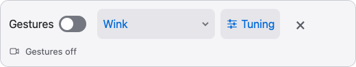

Open your music
Import a PDF or image. On Mac, drag a file into the app.
For iPhone, iPad & Mac
A wink turns the page.
You keep playing.
Find your gesture
Choose the gesture that fits how you play. Adjust its sensitivity and the time between turns in the app.
Wink right to scroll down. Wink left to scroll up.
The Safari extension
Ever found a guitar tab online, then had to stop playing just to scroll?
The Stage Turner extension lets you scroll in Safari with a wink, a head turn, or a sideways mouth gesture. Keep the tab open and keep playing.

A familiar routine. One less interruption.
Import a PDF or image. On Mac, drag a file into the app.
Zoom to a size you can read. Pick a gesture and turn on the camera.
Scroll through the sheet, then turn the page. Manual controls are always there, too.
iPhone · iPad · Mac